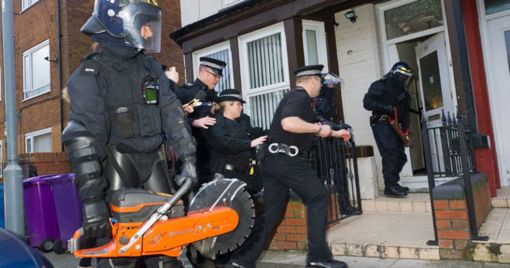
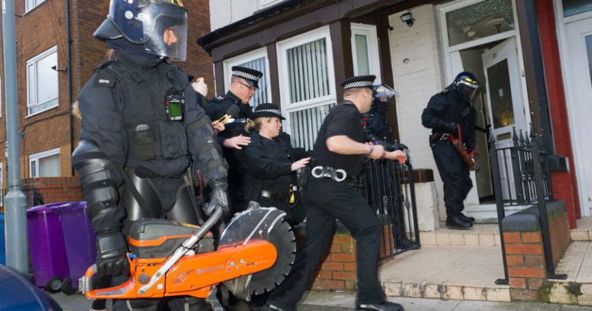

SEROCU Arrested Two for Selling Heroin on the Darkweb
~2 min read | Published on 2022-07-28, tagged Arrested, Darkweb-Vendor using 337 words.
Police in the United Kingdom arrested two people for allegedly conspiring to supply heroin on the darkweb.
Officers with the Cyber and Dark Web Unit of the South East Regional Organised Crime Unit arrested a 34-year-old from Isle of Wight and a 41-year-old man from London for allegedly supplying heroin on the darkweb.

SEROCU officers, officers from the Metropolitan Police Service, and Hampshire Constabulary executed five search warrants at addresses in Portsmouth, Isle of Wight, Hackney, and Walthamstow during the investigation.
Both suspects have been released pending further investigation.
Detective Inspector Rob Bryant of SEROCU’s Regional Cyber Crime Unit said:
“This is an ongoing investigation and our action sends out a clear message to organised criminal groups who are using the Dark Web to commit such offences, that crime really doesn’t pay. We continue to work in partnership with the National Crime Agency, US Law Enforcement and our regional and force colleagues to identify and investigate those using the Dark Web. Anyone who is selling drugs on the Dark Web should realise that we will find them and we will look to prosecute them. The wider impact of drug dealing causes untold damage to people’s lives and we will take every opportunity to disrupt this criminal activity to protect the communities of the South East from harm.”

The National Police Chiefs Council (NPCC) lead for the Dark Web, detective chief inspector Phil Donnelly, said:
“The regional Dark Web Teams, which form part of the UK Dark Web Intelligence Collaboration and Exploitation, are having a real impact on disrupting organised criminal activity on the Dark Web. Criminals should not see the Dark Web as a safe place where police cannot touch them. Our highly trained and capable officers and staff are actively taking down Dark Web operations on a daily basis and the South East team have played an integral role in this ongoing investigation.”
Two arrested on suspicion of drug offences on the Dark Web | archive.is, archive.org, serocu.police.uk
Officers with the Cyber and Dark Web Unit of the South East Regional Organised Crime Unit arrested a 34-year-old from Isle of Wight and a 41-year-old man from London for allegedly supplying heroin on the darkweb.

The hero image displayed on the homepage of the SEROCU website | serocu.police.uk
SEROCU officers, officers from the Metropolitan Police Service, and Hampshire Constabulary executed five search warrants at addresses in Portsmouth, Isle of Wight, Hackney, and Walthamstow during the investigation.
Both suspects have been released pending further investigation.
Detective Inspector Rob Bryant of SEROCU’s Regional Cyber Crime Unit said:
“This is an ongoing investigation and our action sends out a clear message to organised criminal groups who are using the Dark Web to commit such offences, that crime really doesn’t pay. We continue to work in partnership with the National Crime Agency, US Law Enforcement and our regional and force colleagues to identify and investigate those using the Dark Web. Anyone who is selling drugs on the Dark Web should realise that we will find them and we will look to prosecute them. The wider impact of drug dealing causes untold damage to people’s lives and we will take every opportunity to disrupt this criminal activity to protect the communities of the South East from harm.”
Detective Inspector Rob Bryant's Linkedin
The National Police Chiefs Council (NPCC) lead for the Dark Web, detective chief inspector Phil Donnelly, said:
“The regional Dark Web Teams, which form part of the UK Dark Web Intelligence Collaboration and Exploitation, are having a real impact on disrupting organised criminal activity on the Dark Web. Criminals should not see the Dark Web as a safe place where police cannot touch them. Our highly trained and capable officers and staff are actively taking down Dark Web operations on a daily basis and the South East team have played an integral role in this ongoing investigation.”
Two arrested on suspicion of drug offences on the Dark Web | archive.is, archive.org, serocu.police.uk